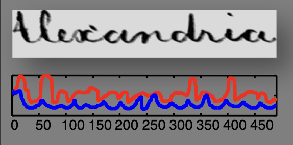

1.4. Dynamic Time Warping (DTW) for radio signals#
Created: September 19, 2022 10:45 AM Created by: devakanth kalapati Email: devakanthkalapati@gmail.com Materials: https://www.cs.unm.edu/~mueen/DTW.pdf, https://www.irit.fr/~Julien.Pinquier/Docs/TP_MABS/res/dtw-sakoe-chiba78.pdf, https://dspace.mit.edu/bitstream/handle/1721.1/27909/07888629-MIT.pdf?sequence=2&isAllowed=y, http://languagelog.ldc.upenn.edu/myl/KruskalLiberman1983.pdf, https://arxiv.org/abs/1512.03216, https://www.audiolabs-erlangen.de/content/05-fau/professor/00-mueller/03-publications/2007_Mueller_DTW-Chapter04-IR_Springer.pdf, https://www-l2ti.univ-paris13.fr/~dauphin/Rabiner93.pdf Type: Analysis
Timeseries is mostly about visual inspections and intuitions. For example, below we can observe that 2 signals are distorted from the norm or its usual behavior which is observed by plotting the signals. We can recognize this and possibly diagnose the issue.
A group of RSSI curves captured from a radio device
Many types of data that are not true timeseries can also be translated or converted into timeseries. Examples: Handwriting, Shapes etc..

Creating a time series from a shape descriptor

Creating a time series from hand writing
Lets say we have a bunch of timeseries of specific shapes and of different lengths. The goal is to cluster them or match them based on the similarity between them.
One simple way is to compute the Euclidean distance between 2 different timeseries and if the distance is Low, you map them together because they are similar. This is generally not an efficient way to match the timeseries as often we have a varying difference in time (occurrence of a data point) and space (phase variation and length).
Without considering the time invariance, we are prone to very poor results. As shown below, any distance measure which maps the $i$th point of one timeseries to the $i$th point of another timeseries is a wrong comparison, even though the shape of the sequences are similar.

Point to point comparison of RSSI curves using Euclidean distance
Most often the time series we are dealing with have properties that are significant and specific to a well known characteristic. In the case of signal capture from the radio device, the maxima is one such feature which helps in localizing the position of the device. Such significant features can be used to model our problem of shifting the curves in space to drop any phase variation impacting our analysis. Below is one such method which uses the maximas or peaks of the RSSI $[dBm]$ curves to shift the curves by creating a landmark.

Landmark shifting

Curves shifted using landmark shifting

RSSI curves shifted using the peak
This technique works tremendously well in the case of curves that have a well-defined peak. Nonetheless, since we are talking about radio devices, due to their digital nature and external factors acting upon them, the curves are noisy and exhibit high variation from one acquisition to another. True peak detection becomes a challenge using these sets of curves, which when shifted using the landmark shifting result in a misaligned set of sequences.


DTW designed by Sakoe and Chiba consists of a minimal-cost alignment problem and is solved efficiently via dynamic programming. It is parameter free/ parameter lite and robust to noise.

Comparison of RSSI curves using DTW
Dynamic Time Warping (DTW) is an algorithm that helps in measuring the similarity between 2 timeseries which may vary in timing. Elimination of the fluctuation in phase by time normalization has resulted in a massive popularity of this technique in a wide variety of fields such as robotics**,** biometrics, medicine, metrology, bioinformatics, video games, gesture recognition, image processing, seismology, music processing, entomology, anthropology, computational photography, bioacoustics, finance ,…
To align 2 different timeseries $A≔ (a_1, a_2, a_3,…, a_N)$ and $B≔ (b_1, b_2, b_3, …, b_M)$ of length $N$ and $M$ respectively, create a matrix the size of $|N|$ by $|M|$. This is called a cost matrix, where each $(n^{th}, m^{th})$ element is the distance between each pair of the time series $A$ and $B$. The usual distance metric employed to calculate the distance between these pairwise elements is the Euclidean distance. Other distances can also be used such as Minkowski, Manhattan etc..

$$ \begin{gather} A= (a_1, a_2, a_3,…, a_N) \ B= (b_1, b_2, b_3,…, b_M) \ c(a_n,b_m) = (a_n-b_m)^2 \end{gather}
$$
Every possible alignment is a path through the matrix from the beginning to the end of the matrix. To get the best alignment, we need to find a warping path $W$ that minimizes the distance between both the sequences.
$$ \begin{gather} W = (w_1,w_2,w_3,…,w_K) \end{gather} $$
W is a sequence of grid points in the matrix, where each $w_k$ corresponds to a point $(i,j)_k$, that provides the alignment of $b_k$ with $a_k$. The dynamic programming approach is focused on finding the best path that minimizes the overall cost of alignment out of the numerous possible paths.
$$ \begin{gather} DTW(A,B) = min_W[\sum_{k=1} ^K(w_k)] \end{gather} $$
Below is an example of the optimal alignment between the 2 sequences using DTW.
DTW alignment and cost matrix of 2 sequences
DTW alignment and cost matrix of 2 sequences

DTW alignment of 2 sequences
To find the minimum cost warping path, a naive function would be to compute every possible path which is combinatorially complex and computationaly explosive. To make the algorithm efficient, certain conditions are put in place to restrict the space of possible warping paths.
Monotonicity
The warping path points must be monotonically ordered. This means that the alignment path cannot go back in time. This also guarantees that we do not repeat the alignment for features that are similar.
$$ ⁍ $$

Continuity
This makes sure that the steps in the grid are not skipped, so that we do not miss any important features.
$$ ⁍ $$

Boundary conditions
This is a constraint on the tails or the end points of the sequences. To ensure that the alignment path does not consider any of the sequences partially, we start at the first point and end at the last point of both the sequences. This means that the start and end of the warping path is at the corner diagonally opposite to each other.
$$ ⁍ $$

Warping window
The warping points can be constrained to fall into specific grids across the diagonal as a good alignment path is unlikely to be away from the diagonal.
$$ ⁍ $$

Slope constraint
To prevent matching short paths of sequences of one time series to very long paths of sequences in another, a slope constraint is set to avoid long movements in a specific direction.
Using the above constraints we formulate a recurrence relation by computing a accumulated cost matrix $D$ which consists of local cost measure for each cell. Each cell of $D$ is defined as the sum of distance between the current cells and the minimum of the local distance measure of the adjacent cells.
$$ \begin{gather} D(n,m) = c(a_n,b_n) + min[D(a_{n-1},b_{m-1}),D(a_{n-1},b_m),D(a_n,b_{m-1})] \end{gather} $$
When computing the accumulated cost matrix $D$, we shall keep track of the adjacent cell which has minimum local cost measure for every $D(n,m)$. For example, $D(2,3)$ based on $(6)$ will have $D(1,3)$,$D(2,2)$ and $D(1,2)$ as adjacent cells or its neighbours.
Later, the optimal warping path $W$ mentioned at $(4)$ can be traced in reverse order of indices from $D(n,m)$ to $D(0,0)$ using the following algorithm.
$$ W_{k-1} = \begin{align} \begin{cases} (1,m-1), &\text{if } n=1 \ (n-1,1), &\text{if } m=1 \ argmin{D(n − 1, m − 1), D(n − 1, m), D(n, m − 1)}, &\text{otherwise}
\end{cases} \end{align} $$
The following point should be emphasized: the technique for aligning two sequences using dynamic programming is based on this fundamental algorithm. This could also be referred to as naive DTW. Different variants of this algorithm can be developed by modifying certain conditions and parameters. However, implementing such modifications requires the ability to tailor them to the specific problem at hand.
To begin with, lets consider a set of signals acquired from a specific radio device. The curves below have been captured by an onboard modem on the train when travelling in a respective direction.


After inspection, it is observed that the RSSI curves exhibit several types of phase variation:
The curves are uniformly shifted to the left and right by a specific factor. This requires translation of the curves as in the case of landmark shifting.
Scale of the curves in some regions is either wide or narrow. This could be an artifact of the sampling rate or the speed of the train.
Combining both 1 & 2 it is clear that we require diffeomorphic transformation that reshapes the signals by preserving the smoothing and continuity of it while still retaining significant deformations.
The signature of the signals vary and can also include flat portions. This could be an artifact of missing data/interpolation.
Other observations such as different lengths, incomplete signals etc.
To align a group of RSSI curves in a coordinate system, we need a reference abscissa and curve. For the given problem and cases considered, lets opt the curve with the longest range ($kp_{max} - kp_{min}$). This will allow to align curves without loss of RSSI values at the tails.

Given that the RSSI is unevenly sampled, the next step is to interpolate it over a linearly spaced abscissa. This will help us retain visual shape and geometric features of the curves when put in comparison to match similar patterns using DTW.

To ensure that we focus solely on the shape and not on offsets or variations, it is important to use differencing. It is simply the difference between consecutive observations. This technique allows us to eliminate trends, slopes, significant distortions, and temporal patterns. When working with radio devices, the signals may have fluctuations, deterioration, and other degradation-related characteristics, which makes it crucial to apply differencing. For the problem at hand, 1st order differencing of the signals has been executed. If necessary, smooth the resultant series with a infinite impulse response (IIR) filter. We shall look at examples of alignment with degradations in later sections and the impact of differencing.
$$ d’t = d_t - d{t-1} $$


As mentioned earlier, we will tweak the naive DTW algorithm to our specific problem. Firstly, we change the continuity condition that is a step pattern. Drawback of the current step pattern is that the warping path can get stuck at one position, meaning one point being aligned to many consecutive points. To avoid such long horizontal and vertical movements, we can replace the step pattern in $(7)$ with $argmin{D(n − 1, m − 1), D(n − 2, m - 1), D(n - 1, m − 2)}$. Several other step patterns can be explored and used as per the requirements. The accumulated cost matrix $D$ in $(6)$ is now
$$ \begin{gather} D(n,m) = c(a_n,b_n) + min[D(a_{n-1},b_{m-1}),D(a_{n-2},b_{m-1}),D(a_{n-1},b_{m-2})] \end{gather} $$


To favor horizontal, vertical or diagonal moves, we can add a weight vector with penalties for each move. Since one horizontal and one vertical move corresponds to a single diagonal move, a balance can be established by using a weight vector with penalties $(p_d,p_h,p_v)$. This method can be adapted for other step patterns. The recursion algorithm becomes
$$ D(n,m) = \begin{align} min\begin{cases} D(n − 1, m − 1) + p_d.c(a_n,a_m) \ D(n − 2, m − 1) + p_h.c(a_n,a_m) \ D(n − 1, m − 2) + p_v.c(a_n,a_m) \end{cases} \end{align} $$
One can add global constraints on top of this to limit the amount of admissible warping paths, such as sakoe-chiba band or itakura parallelogram. This is done by simply restricting the warping path to travel in a specific zone or cells in $D$. The danger of this is that sometimes optimal warping path might lie outside the restricted zone.
The boundary condition ensures that we align first and last points of both the sequences together. This results in global alignment. Since we are dealing with radio signals that have varying lengths, this condition results in undesirable alignment. This is the most crucial aspect of the entire problem. To ensure that we do not warp signals forcefully, we shall consider performing partial matching. On top of minimizing the cost function, we shall also maximize the lengths of the series that match. Given the fact that our reference is the largest curve out of the pool of curves, we can perform a combination of global and local alignment by omitting the boundary condition to find the alignment of the short curves with the reference curve.


Finally, DTW can be applied on the series and reference obtained after differencing and above modifications. The resultant alignment path obtained for each series can be used to warp the actual signals to the reference abscissa in an iterative manner.

Below are few examples of aligning a set of curves.


Below are examples after adding a set of degradations and the impact of differencing on two sample curves.


The proposed solution would result in undesirable alignment without differencing. Below are the results of using DTW on the sample curves used above with degradations and temporal deformations without differencing.


In some scenarios, the proposed alignment might not work as expected. But it is a powerful algorithm to avoid inconsistencies in analysis and computations caused by phase variability.